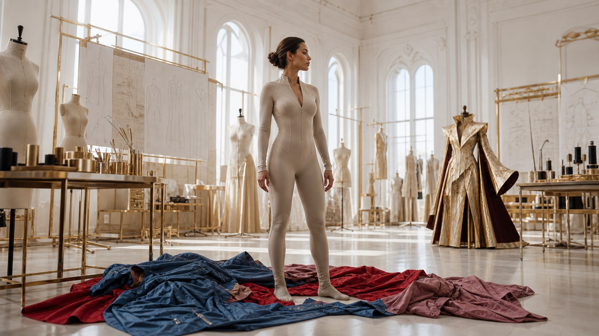
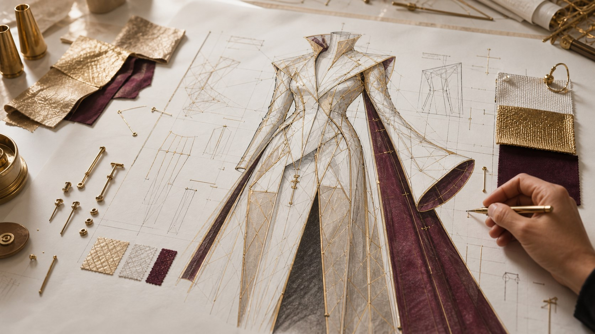
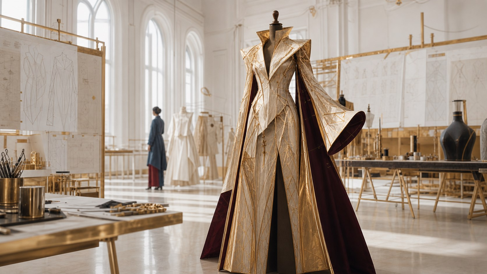
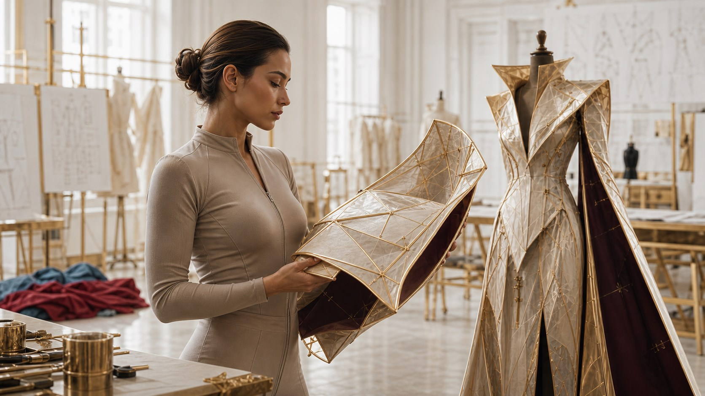
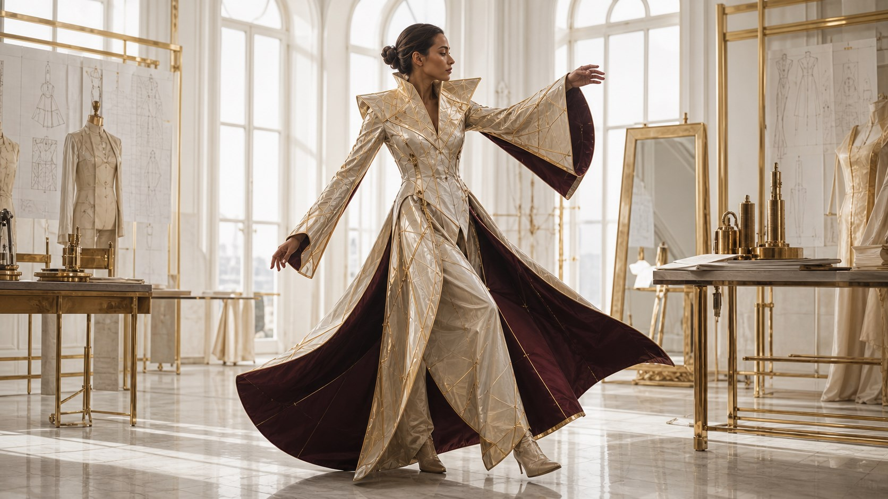
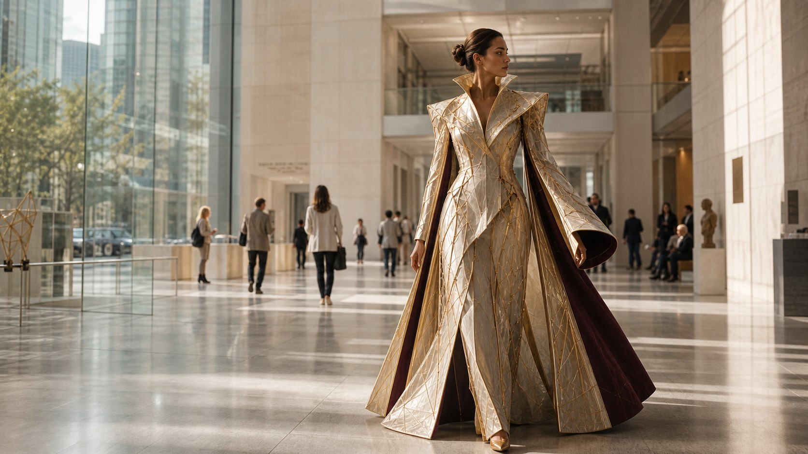
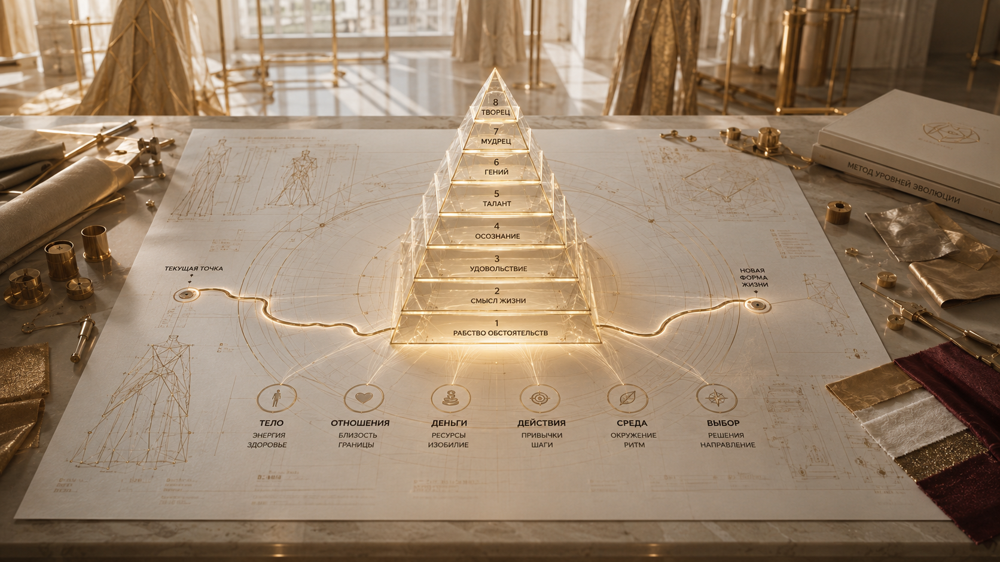

Персональный Маршрут 6–9 месяцев
Когда один жизненный запрос тянет за собой отношения, тело, деньги, реализацию и способ выбирать.

что это такое
Персональный маршрут
Это сборка новой системы жизни.
6–9 месяцев
Индивидуальная работа со Светланой: от разбора точки перехода до закрепления нового способа жить, выбирать и действовать.
Маршрут, собранный под вас
Индивидуальная система работы строится вокруг вашей цели, реальной жизни и созревшего перехода.
Одна задача открывает систему
Начинаем с прицельной точки и смотрим, как она связана с отношениями, телом, деньгами, реализацией и способом выбирать.
Появляется стратегическая линия
Становится видно, какие действия дают максимальный эффект и не забирают лишнюю энергию.
Новый уровень входит в жизнь
Формат нужен там, где важно не только понять себя, а перестроить реальный способ жить и действовать.

кому подходит
Когда старый способ жить уже снят, а новый ещё нужно собрать.
Персональный маршрут — для большого жизненного перехода, где нужно менять не одну ситуацию, а всю систему жизни.
Внешне всё получилось
Есть статус, опыт и результат, но исчез вкус к жизни и ощущение себя.
Прежняя роль стала тесной
Вы выросли из дела, роли или масштаба и уже не можете возвращаться в старую форму.
Способности не реализованы
Сила есть, но её нужно вывести в действие, систему и устойчивый результат.
Переход созрел сейчас
Есть ресурс и возможность сделать сдвиг, не растягивая его на годы.
Нужна опора на годы
Важно не закрыть одну проблему, а собрать основу для авторской жизни.
Отношения подошли к точке
Дальше нужен честный выбор: завершение прежнего сценария или новый уровень близости.
запросы
С какими запросами приходят
«Я больше не могу жить в этих отношениях так, как раньше».
«Я всё построил, но не понимаю, кто я теперь».
«Я успешен в одном, но в другой части жизни снова возвращаюсь в прежний сценарий».
«Я понимаю, что могу больше, но будто сам себя удерживаю».
«Я не хочу снова начинать с нуля. Я хочу перейти на другой уровень».
«Мне нужен не психологический разбор, а ясный маршрут».
что это за работа
Сначала появляется карта перехода.
Мы выбираем конкретную цель или задачу, которую действительно важно решить в ближайший срок, и смотрим на неё как на вход в большую систему жизни.
Точка перехода
Определяем, какой уровень исчерпан, какой переход созрел и что будет сопротивляться движению.
Система жизни
Смотрим не только цель, но и связи с телом, отношениями, деньгами, энергией и решениями.
Стратегическая линия
Собираем маршрут так, чтобы одно точное действие влияло на всю систему, а не забирало лишние силы.
Закрепление выбора
Новое считается пройденным не после инсайта, а когда оно входит в решения, привычки и результат.


что входит
Персональная архитектура перехода
После полного тестирования становится видна точка отсчёта, потенциал движения и длина маршрута. Затем Светлана подробно собирает карту: задачи, план, ориентиры и последовательность перехода.
Полное тестирование
Определяем текущую точку, потенциал движения, ключевые сферы и то, что может поддержать переход.
Карта маршрута на руках
Вы получаете подробный план на выбранный срок: задачи, этапы, ориентиры и последовательность действий.
Самостоятельное движение
Если ресурса достаточно, можно взять готовую карту и проходить маршрут самостоятельно.
Маршрут с сопровождением
Можно выбрать работу со Светланой и командой: встречи, поддержка между ними и регулярная сверка карты.
инструменты
Светлана подбирает инструменты внутри маршрута под вашу задачу
Метод уровней эволюции
Чтобы видеть точку человека, следующий переход и систему изменений.
Квантовые активации
Если конкретный внутренний порог не двигается привычным способом.
Интенсив или ретрит
Когда для перехода нужно выйти из привычной среды и пройти важный участок глубже.
Архетипы, тело, свобода
Когда важно увидеть роли, сценарии, телесный режим или страх, который удерживает старую форму.
как устроен маршрут
Форма собирается в карте и проверяется в жизни.

Разбор точки перехода
Смотрим на реальную жизнь и определяем, какой уровень исчерпан и какая сфера может стать опорой.
Карта маршрута
Фиксируем задачу, результат, срок, порядок перестройки и инструменты, которые берём в работу.
Регулярная работа
Личные встречи, сопровождение и корректировка маршрута по мере движения.
Закрепление
Новое состояние входит в выборы, привычки, среду и реальные результаты.
три опоры
На чём держится работа
Ясность и маршрут
Быстро увидеть, где вы решаете новую задачу старым способом, и определить следующий верный шаг.
Внутренний центр
Вернуть контакт с точкой, из которой решения перестают быть попыткой угодить, выжить или удержать.
Проведение через сложные участки
Найти форму, в которой новое состояние становится живым и естественным, без давления на себя.

длительность и стоимость
Длительность собирается под переход
2 000 € в месяц
Оплата происходит помесячно. До начала работы фиксируются задача, желаемый результат, формат взаимодействия и срок.
Карта и первый цикл
Подходит, чтобы пройти полное тестирование, получить подробную карту, проверить первые шаги и затем двигаться самостоятельно.
Системный переход
Подходит, когда основная задача ясна: начать с одной-двух ключевых сфер и закрепить изменения в общей системе жизни.
Глубокий переход
Подходит, когда меняются отношения, тело, реализация и жизненная стратегия.
Если в маршрут нужен офлайн-интенсив, ретрит или подключение сторонних специалистов, формат и внешние расходы согласуются отдельно до начала такого этапа.

что меняется
Новая форма начинает жить в обычной реальности.
Изменения проявляются через решения, разговоры, завершение старого, новый проект или шаг, который раньше казался невозможным.
Появляется ясный маршрут
Вместо хаотичных попыток становится понятно, куда двигаться дальше.
Решения идут из своей точки
Меньше страха, вины и чужих ожиданий; больше внутреннего согласия.
Отношения перестраиваются
Где-то углубляются, где-то честно завершаются.
Тело становится опорой
Новый режим перестаёт быть только идеей и начинает выдерживаться в жизни.
Реализация получает масштаб
Новый уровень проявляется через действия, а не только через понимание.
Состояние закрепляется
Новое входит в среду, привычки и результаты, а не остаётся инсайтом.
границы формата
Кому эта работа не подойдёт
Когда решение ждут извне
Маршрут не заменяет вашу волю и не принимает решения вместо вас.
Когда нужен результат без участия
Светлана отвечает за глубину включения, точность разбора и честность процесса. Шаги остаются вашей частью.
Когда нужен жёсткий контроль
Работа строится не на давлении, а на ясности, выборе и внутренней опоре.
ОБО МНЕ
Светлана Страусс
Лучше всего в моей работе получается видеть не только проблему человека, но и тот уровень жизни, который он уже перерос.
Я работаю с людьми, которые многое построили, многое понимают и многое выдерживают. В какой-то момент прежний способ жить, действовать и принимать решения больше не даёт им ни масштаба, ни свободы, ни вкуса к жизни.
Моя сильная сторона — видеть, где человек застрял между старой и новой системой, что удерживает его в прежнем и какой шаг действительно приведёт дальше.
Держу маршрут целиком
Вижу сложные точки перехода и помогаю пройти их без разрушения себя и своей жизни.
Собираю маршрут под вашу жизнь
В центре остаются ваши цели, темп и способ выбирать; работа помогает им сложиться в собственную систему.
Возвращаю опору выбора
Человек учится жить из новой точки: принимать решения, строить отношения, создавать и выдерживать масштаб.
связь с методом
Метод уровней эволюции даёт карте маршрута опору
Сначала определяется, на каком уровне человек находится и какой переход созрел. Затем маршрут собирается в конкретной жизни: в теле, отношениях, деньгах, действиях, среде и выборе.

Где вы сейчас
Метод помогает увидеть не только проблему, но и уровень, из которого она повторяется.
Какой переход созрел
Становится понятнее, что пора завершить и какая новая форма жизни уже просится наружу.
Как закрепить новое
Маршрут переводит понимание в решения, действия, среду и устойчивый ритм.
Вопросы
Частые вопросы
На «Навигаторе» определяется масштаб перехода и объём поддержки. Готовую карту можно проходить самостоятельно; три месяца дают карту и первый проверенный цикл; шесть подходят для системного перехода, девять — когда одновременно меняются несколько ключевых сфер.
Нет. Оплата происходит помесячно, по €2 000. До начала фиксируются задача, желаемый результат, формат взаимодействия и планируемый срок.
Нет. В маршрут входит до четырёх онлайн-встреч по 90 минут; ритм может корректироваться под этап работы. Включённая в маршрут активация может заменять часть личных встреч.
Квантовые активации не оплачиваются отдельно, если включены в персональную карту. Для офлайн-интенсива, ретрита или сторонних специалистов формат и внешние расходы согласуются отдельно до начала этапа.
Основной маршрут ведёт Светлана. При необходимости она может подключать профильных коучей или Мастеров и рекомендовать дополнительные практики; условия обсуждаются заранее.
До начала фиксируются задача, желаемый результат и срок; в конце каждого месяца оцениваются фактические изменения и обновляется маршрут. Если формат перестаёт быть точным, можно скорректировать срок, перейти к самостоятельному движению по карте или сделать паузу.
КАК НАЧАТЬ
Сессия «Навигатор»

€300
Онлайн-встреча со Светланой
«Навигатор» — это отдельная онлайн-встреча, на которой собирается ваш путь перехода.
Вы получаете ясность: что сейчас важно, где застряло движение и какой следующий уровень созрел.
Итог — индивидуальный план развития: что завершить, что усилить, какой формат выбрать и с какого шага начать.
ЕСЛИ ТОЧНЫЙ СЛЕДУЮЩИЙ ШАГ — МАРШРУТ
Персональный маршрут 6–9 месяцев
2 000 € / месяц
6–9 месяцев индивидуальной работы со Светланой: до 4 встреч в месяц и сопровождение между ними.
Если вы проходили «Навигатор», €300 входят в оплату первого месяца маршрута.
Ритм, длительность и содержание работы фиксируются после разбора точки перехода.